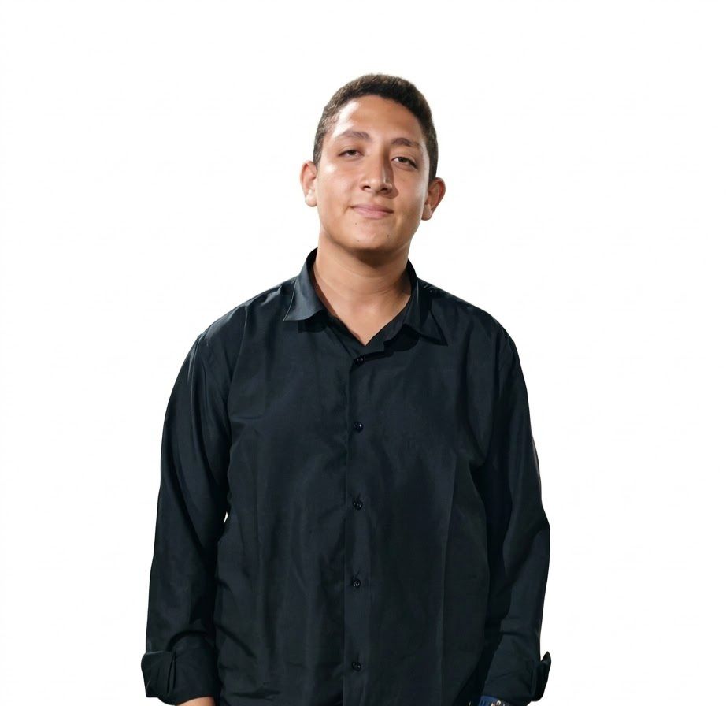

يوسف محمد إسماعيل — مطور مواقع ويب
ليست كلُّ فكرةٍ تُرى... بعضُ الأفكار تُبنى.
أصوغ الأفكار في تجارب رقمية تجمع بين جمال التصميم، ودقة المنطق، وسلاسة الاستخدام. أكتب الشيفرة لتؤدي وظيفتها، وأصمم التفاصيل لتمنح كل مشروع هويته الخاصة.
من سطرٍ من الشيفرة، قد تبدأ حكايةٌ كاملة.
ما وراء
الشيفرة
الشيفرة وسيلة، وليست الغاية. والتصميم لغة، وليس زينة. أما التجربة الناجحة، فهي اللحظة التي ينسى فيها المستخدم تعقيد التقنية؛ لأن كل شيء يعمل كما ينبغي.
أرى في كل مشروع مسألةً تستحق التفكير، وفي كل تفصيل فرصةً للتحسين، وفي كل واجهة وعدًا يجب أن يفي به المنتج. لذلك أبدأ بالفكرة، وأفكر في الإنسان الذي سيستخدمها، ثم أبني الحل الذي يجمع بين الوضوح والكفاءة والجمال.
- ١
الفكرة قبل التنفيذ
أفهم المشكلة قبل أن أكتب أول سطر.
- ٢
الإتقان في التفاصيل
الأشياء الصغيرة هي التي تصنع الفرق الكبير.
- ٣
الجمال الذي يخدم الوظيفة
التصميم الناجح لا يكتفي بإبهار العين؛ بل يسهّل الحياة.
أعمالٌ تتحدث عن أصحابها
لكل مشروع تحدٍّ مختلف، ولكل فكرة طريقها إلى التنفيذ. هنا أضع نماذج من الأعمال التي تجسّد اهتمامي بالتفاصيل، وبناء الواجهات، وتطوير الحلول الرقمية.
الأدوات التي أكتب بها أفكاري
تختلف الأدوات، لكن الغاية واحدة: بناء منتجات رقمية واضحة، قابلة للصيانة، ومهيأة للنمو.
من الفكرة إلى منتجٍ يعمل
أساعد أصحاب الأفكار والأعمال على تقديم خدماتهم ومنتجاتهم من خلال مواقع رقمية تجمع بين وضوح الرسالة، وسهولة الاستخدام، والتنفيذ التقني المنظم.
لكل فكرة طريقٌ إلى الوجود
- 01
الاستماع
أفهم الفكرة والاحتياج والجمهور المستهدف قبل اختيار الحل.
- 02
التخطيط
أحدد بنية الموقع، وأرتب الأولويات، وأصوغ ملامح التجربة.
- 03
البناء
أطوّر الواجهات والمنطق البرمجي، وأهتم بالتفاصيل والأداء.
- 04
الاختبار والتسليم
أختبر الوظائف، وأراجع التوافق، وأصلح المشكلات قبل التسليم.
قصيدةُ الفكرة
سأمضي، وإن طالَ الطريقُ، بعزّتيوأجعلُ من صعبِ المسيرِ منارَا
وأبني من الأفكارِ صرحًا شامخًاوأمنحُ وجهَ الحلمِ شكلًا ونورَا
إذا قالَ دربُ المستحيلِ: نهايةٌكتبتُ على جدرانِهِ: لن أُدارِيَا
فما المجدُ إلا فكرةٌ قد آمنتْبأنَّ يدَ الإصرارِ تصنعُ ما يُرَى
أبياتٌ أصلية كُتبت خصيصًا لهذه الهوية.
كلماتٌ على هامش الطريق

من يقف خلف هذه السطور؟
أنا يوسف محمد إسماعيل، مطور مواقع ويب، أجد في البرمجة مساحةً يلتقي فيها التفكير المنطقي بالخيال، وتتحول فيها الأفكار من تصوراتٍ أولية إلى منتجاتٍ يمكن للناس استخدامها.
أهتم ببناء واجهات واضحة، وكتابة شيفرات منظمة، وتصميم تجارب تحترم وقت المستخدم وتسهّل عليه الوصول إلى ما يريد. وأؤمن أن التعلم المستمر جزء من المهنة، وأن كل مشروع جديد فرصة لفهم أعمق وبناء أفضل.
لا أرى نهاية الطريق في إتمام المشروع، بل في الوصول إلى نتيجة تؤدي غرضها، وتحترم مستخدمها، وتترك انطباعًا يستحق البقاء.
لنجعل الفكرة بدايةً لشيءٍ حقيقي
إن كانت لديك فكرة تبحث عن طريقها إلى التنفيذ، أو مشروع يحتاج إلى حضور رقمي يليق به، فلنبدأ من السؤال الصحيح.